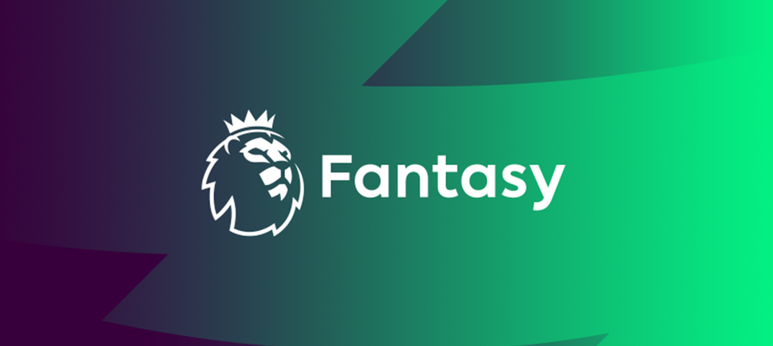

FPL Team Helper and Previous Best Team Checker
The project aims to develop a machine learning model for predicting Fantasy Premier League (FPL) player performance. It also involves analyzing the best teams for each gameweek and identifying the best team without transfers for previous seasons. This model can aid FPL managers in making strategic player selections.

Need help deciding on player transfers for your fpl team? Look no further. Our points predictor uses machine learning algorithms to predict player performance, allowing you to get the best possible player transfer advice.

Interested in seeing the best teams for previous seasons, or for past gameweeks? Well you've come to the right place.